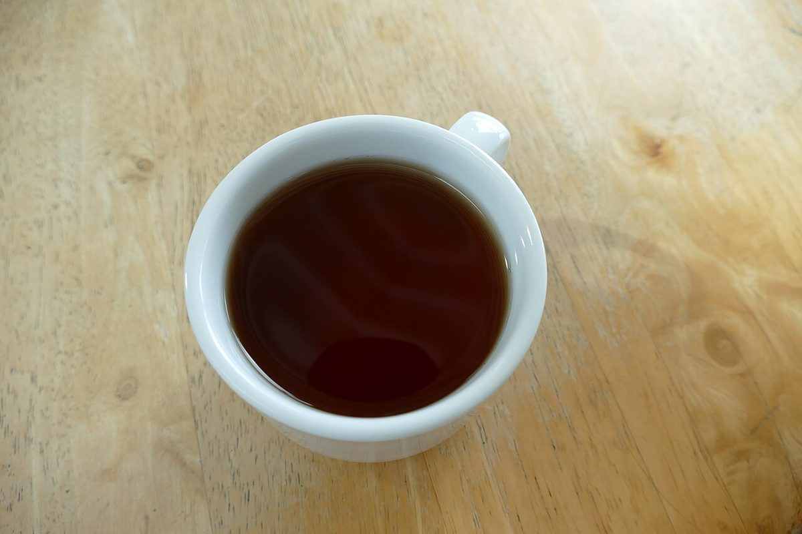

店のこと
ティーポットの六つの部位
制作側の連想で、お店の理念・由来とは無関係です。お店についての詳しい情報は準備中です。
1
蓋
本体の口をふさぐ、つまみ付きのふた。
2
胴
お湯と茶葉を入れる、ふくらんだ本体。
3
注ぎ口
お茶を注ぐための、胴から伸びる細い口。
4
持ち手
胴の反対側に付く、手で持つための輪。
5
茶こし
胴の内側にある、茶葉を止める網。
6
底
ポットを台の上で安定させる、胴の下の足。
ギャラリー(イメージ)
窓辺のポットと一杯


写真はイメージです。お店のものではありません。
ギャラリー(イメージ)
コーヒー豆の写真


コーヒー豆のイメージです。お店で扱う豆を示すものではありません。
ご案内
お店のこと(確認できたものだけ)
| 所在地 | 〒395-0043 長野県飯田市通り町2丁目1-1 |
|---|---|
| 電話 | 準備中 |
| 営業時間 | 準備中 |
| 定休日 | 準備中 |
| ご予約 | 準備中 |
| 駐車場 | 準備中 |
| SNS | Instagram @sanrengura_cafeindustry |